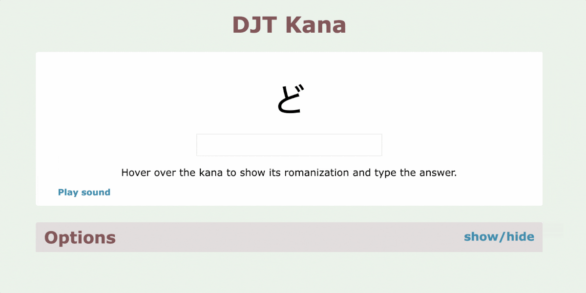
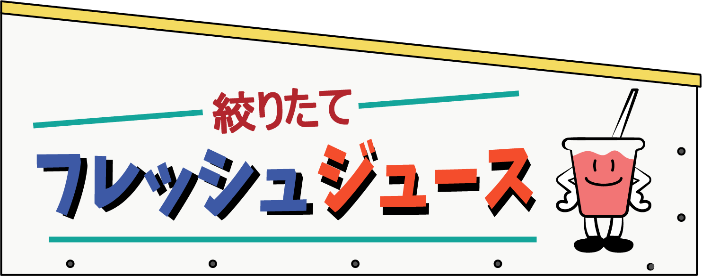

ひらがな・カタカナ
The Japanese written language is a fusion of three distinct scripts. Children in Japan first learn Hiragana and Katakana, before progressing to the more complex and vast set of Kanji characters, which were imported from China around the 5th century CE.
Phonetics
Hiragana and Katakana are phonetic scripts, meaning they visually represent sounds used in speech and don't carry any meaning. While both character sets largely share the same basic syllables, Katakana includes additional characters for representing foreign sounds not traditionally found in Japanese. Both scripts serve different purposes within the language. Although not used this way in practice, you could technically spell native Japanese words using just these two scripts.
Memorizing characters using mnemonics
I found memorizing Hiragana and Katakana fairly easy, and it took me about a week. What worked best was utilizing visual mnemonics that simplify remembering information through simple associations.
Here's an example for memorizing the character 'の'. This character represents a syllable roughly pronounced as 'no' in the English word 'not'. Associating it with a 'No/not smoking' sign, which is similar in shape to the hiragana character, was a helpful visual cue.
The internet is full of examples of mnemonics for the kana, so there is no need to make them up yourself.
Learning how to write
Learning to write Hiragana and Katakana isn't too challenging, but it's important to follow the correct stroke order. Correct stroke order is crucial because it helps you intuitively write new characters and improves readability.
I started with some practice sheets to learn the stroke order, and then switched to a gridded notebook, writing the characters from memory.
Practice, practice, practice
During my first month in Japan back in 2020, I regularly did speed quizzes to recognize kana as quickly as possible. Pretty soon, the characters came naturally, and eventually, I didn't have to rely on mnemonics. Reading Hiragana and Katakana now feels as familiar as reading the Latin script; I simply know their shapes and sounds without having to think about them.

Practical use in daily life
Hiragana is mostly used for Japanese-origin words, so without knowing the meanings of those words, it wasn't very useful to me until I started learning some actual vocabulary.
The most useful thing for me right from the start was knowing Katakana. This script is primarily used for foreign loanwords, often imported from English, making them easy to understand. For instance, when I was searching for shampoo at a convenience store, I picked up a bottle with the text 'シャンプー' on it. These syllables spell 'sha-n-puu', making it likely I had found the right product. Although only a small step, it started making things easier for me and marked my beginning of learning Japanese vocabulary.
